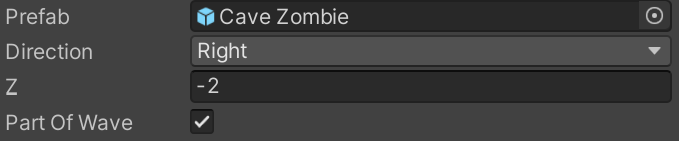

Add Encounters
Enemies in the game are often spawned in a form of an encounter. The encounter is divided to waves, and when one wave finishes, the next will invoke.
Camera Behaviour
While in encounter, the camera border is restricted between two X coordinated. The camera will follow the player between these positions, but it will not exceed. When the encounter is over, the camera border will return back to normal. If an encounter starts and the camera is not yet inside the restricted border, it will follow the player into the border. While the encounter is active, the player cannot exceed the camera border. However, enemies can exceed the border, to prevent them from being trapped between the player and border.
Add an Encounter
- Create an empty game object, and give it an indicative name.
- Add a trigger for the encounter. More info in Adding Triggrs.
- Add the Encounter Action component, located in Assets/Scripts/Level/Actions.
- From the trigger, attach the method
Invokeof the new Encounter Action.
Customization
Wave announcer
Wave announcer is a prefab of a UI object that will be activated once a wave starts. The prefab must have the component Wave Announcer. The component accepts a property Text, which is a reference to a TextMeshPro component. It's used to display the announcement: "Wave X begins!".
Wave definitions
Wave definitions is a list where each element defines a wave in the encounter, and each wave is a list of enemy definitions. Each instance of an enemy has to be defined separately. The defined enemies are spawned when the wave starts, and the player has to eliminate them to finish the wave. Each enemy definiton has the following properties: 
- prefab: Enemy to spawn.
- Direction: Side of the camera border from which the enemy walks into the encounter (
LeftorRight). - Z: Z coordinate from in which the enemy spawns.
- Part of wave: If true, the enemy has to be eliminated in order to finish the wave.
First wave pre spawned enemies
List of enemy objects from the scene (not prefabs). The player has to eliminate them to finish the first wave, in addition to the enemies spawned in that wave (if any).
Time to alarm
Delay (in seconds) before enemies start attacking the player. This property affects all the enemies defined in Wave definitions (regardless of whether they are Part of wave), and also enemies defined in First wave pre spawned enemies. When the delay finishes, it will activate a trigger animator parameter called Alarm.
Camera border
Border of the camera during the encounter. More info in Camera Behaviour section.
Spawn source distance
Specifies the distance outside the camera border where enemies are spawned. Enemies should enter the camera border by themselves.
Post encounter event
UnityEvent to invoke when the encounter is over. Pick an object or drag one in, and select any of its methods to invoke.